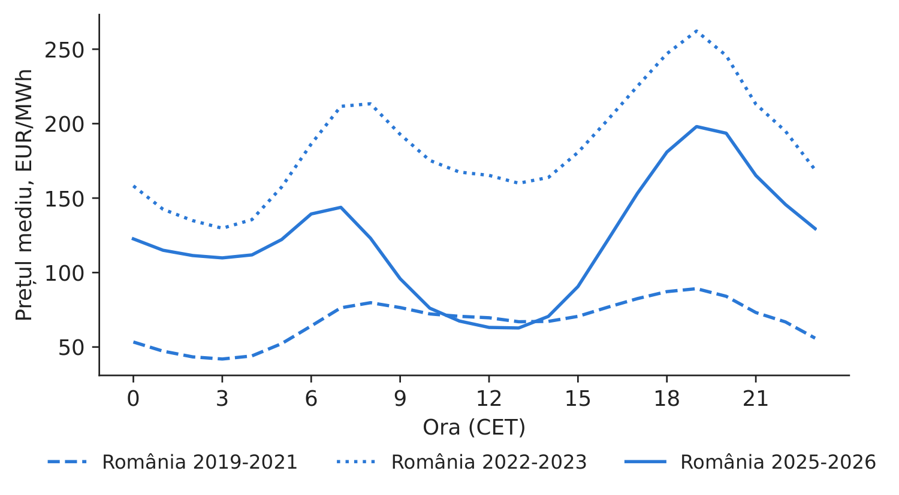
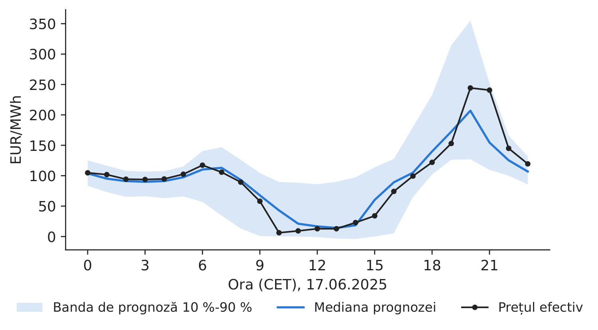
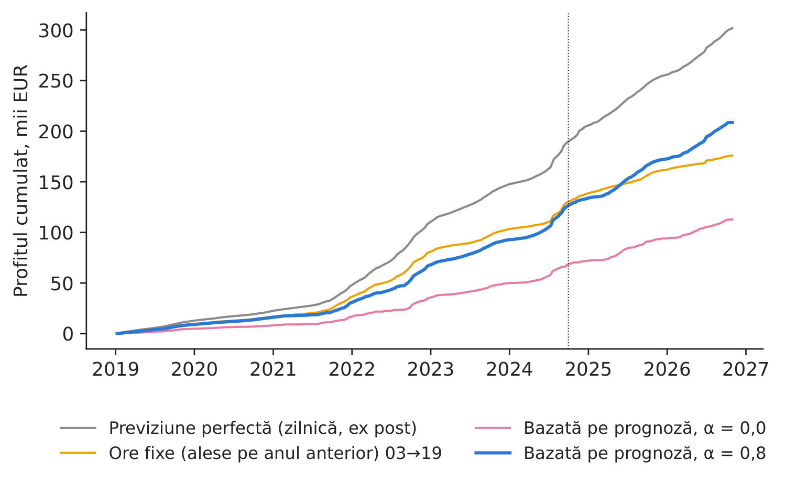
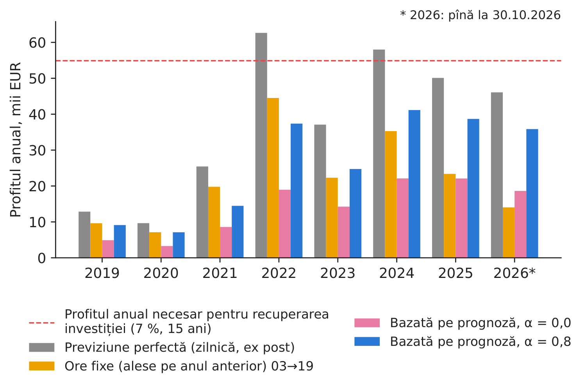

Studiul de caz 6 · Cursul 6
Prognozele probabilistice și valoarea arbitrajului cu baterii pe piața pentru ziua următoare
Prof. dr. Daniel Traian PELE
Academia de Studii Economice din București, Departamentul de Statistică și Econometrie
Academia Română, Institutul de Prognoză Economică
Lucrarea de referință
Andrei, A.-V., Cepoi, C. O., Dumitrescu, B. A., Lessmann, S., Chiriac (Luchian), A.-C., Pele, D. T. și Petukhina, A. (2026). Joint probabilistic forecasting for battery arbitrage in day-ahead power markets. SSRN (Social Science Research Network), document de lucru 6872381. doi:10.2139/ssrn.6872381
Problema decizională
Unui producător din România care deține un parc fotovoltaic i se propune un sistem de stocare a energiei în baterii (BESS, battery energy storage system). Prezentarea ofertantului arată profitul pe care bateria l-ar fi putut obține în 2022. Comitetul de investiții trebuie să decidă: cît cîștigă efectiv o baterie care cumpără ieftin și vinde scump pe piața pentru ziua următoare (PZU), dacă ofertele se depun cu o zi înainte, fără a cunoaște prețurile de a doua zi — și se recuperează astfel investiția? Departamentul de tranzacționare are o a doua întrebare: în ce ore și la ce prețuri ar trebui să liciteze bateria?
Lucrarea de referință
Întrebarea de cercetare. Ce parte din valoarea de arbitraj poate fi captată ex ante atunci cînd sistemul de stocare este exploatat pe baza prognozelor probabilistice ale prețului și justifică aceasta investiția, pe patru piețe interconectate pentru ziua următoare din Europa Centrală și de Est (secțiunile 1 și 3)?
Datele. Prețurile orare pentru ziua următoare din România, Bulgaria, Ungaria și Cehia, ianuarie 2018 – septembrie 2024 (59.160 de ore pentru fiecare țară), cu 37 de variabile explicative: consumul, producția și prognozele acestora, prețurile anterioare, prețurile Brent, TTF (Title Transfer Facility) și ale certificatelor de emisii de CO\(_2\), variabile meteorologice și calendaristice (secțiunea 5.1). Bateria: 1 MW / 1 MWh, randament de 90 %, CAPEX (cheltuieli de capital) de 500.000 EUR, durată de viață de 15 ani, rată de actualizare de 7 %, cel mult un ciclu pe zi (secțiunea 4).
Metoda. Modelele DRF (Distributional Random Forests, păduri aleatoare care estimează distribuții întregi) prognozează distribuția comună a celor 96 de prețuri din ziua următoare (24 de ore \(\times\) 4 țări) și sînt reestimate la fiecare 30 de zile pe ultimele 365 de zile. O regulă bazată pe cuantile (QB) alege ora de cumpărare și ora de vînzare pe baza medianelor prognozate și plasează oferte cu preț limită la cuantilele prognozei; reperele de comparație sînt o pereche fixă de ore (NH) și previziunea perfectă zilnică (PF-Daily).
Principalele rezultate ale lucrării.
- Pentru \(\alpha=0{,}8\), strategia QB obține un profit cumulat mai mare decît NH pe toate cele patru piețe, cu cîștiguri relative de aproximativ 13 % în Cehia și 7 % în România (secțiunea 6.2). România, ianuarie 2019 – septembrie 2024: QB \(\alpha=0{,}8\) 142.671 EUR, NH 133.230 EUR, PF-Daily 188.249 EUR; perioada de recuperare a investiției este de 20,1 ani pentru QB (tabelul pentru România).
- La CAPEX-ul de referință de 500.000 EUR, nicio strategie nu acoperă costul investiției (secțiunea 6.2); pentru regula QB, CAPEX-ul de echilibru se situează între 48 % și 75 % din valoarea de referință (secțiunea 6.2).
- Operarea comună, transfrontalieră, crește profitul QB cu aproximativ 5 % (149,9 mii EUR față de 142,7 mii EUR pentru România) și cu 18 % în ipoteza previziunii perfecte, datorită diferențelor regionale persistente de preț (rezumat; tabelul pentru operarea în mai multe zone).
- Acuratețea DRF pentru România: MAE (eroarea absolută medie) 39,63, RMSE (rădăcina erorii pătratice medii) 49,60, CRPS (scorul de probabilitate clasat continuu) 28,12 EUR/MWh, pe 70 de ferestre mobile (tabelul privind performanța prognozelor DRF).
O altă lucrare a grupului nostru relevantă pentru cursul 6: Basangova, Bolovăneanu, Conda, Pele et al. (2026), Day-ahead forecasting for redispatch measures using machine learning models, SSRN (Social Science Research Network) 7511080, doi:10.2139/ssrn.7511080 — rețelele neuronale (NBEATSx, NHiTS, Neural Hierarchical Interpolation for Time Series, TFT, Temporal Fusion Transformer) prognozează volumele de redispecerizare din Germania pentru ziua următoare mai bine decît modelele din generațiile anterioare (rezumat; Tabelul 4).
Metoda, pas cu pas
Intuiția metodei
O baterie cîștigă diferența dintre prețul unei ore ieftine și cel al unei ore scumpe, minus cei 10 % pierduți la încărcare și descărcare. Retrospectiv, cele mai bune două ore sînt evidente; în momentul deciziei, ele sînt doar o estimare. O prognoză probabilistică nu spune doar „prețul la ora 19:00 va fi de aproximativ 150”, ci „cu o probabilitate de 80 %, prețul va fi între 110 și 210” — informație care îi arată responsabilului cu tranzacționarea cît de agresiv poate licita.
Fie \(p_{d,h}\) prețul pentru ziua următoare în ora \(h\) a zilei \(d\) și \(\eta=0{,}9\) randamentul. Cumpărarea a 1 MWh în ora \(h_1\) și vînzarea lui în ora \(h_2>h_1\) aduc \(\pi_d=\eta\,p_{d,h_2}-p_{d,h_1}/\eta\). Strategia de previziune perfectă alege în fiecare zi cea mai bună pereche de ore (o limită superioară); strategia cu ore fixe folosește o singură pereche, aleasă ex ante ca fiind, în medie, cea mai bună în anul anterior (cele 365 de zile dinaintea datei de 8 ianuarie 2019 pentru perioada 2019–2024, anul 2024 pentru 2025–2026), și tranzacționează în fiecare zi. Modelul Random Forest atribuie fiecărei zile trecute \(i\) o pondere \(w_i(\mathbf x_d)\) — proporția arborilor în care ziua \(i\) ajunge în aceeași frunză ca și condițiile din ziua următoare, \(\mathbf x_d\) —, astfel că prognoza este o distribuție completă a vectorilor de prețuri pe 24 de ore, iar cuantilele sale \(\hat Q_{\tau,d,h}\) sînt cuantile ponderate. Regula bazată pe prognoză alege \(h_1<h_2\) care maximizează \(\eta\hat Q_{0.5,d,h_2}-\hat Q_{0.5,d,h_1}/\eta\), tranzacționează numai dacă această valoare este pozitivă și licitează cumpărarea la \(\hat Q_{1-q,d,h_1}\) și vînzarea la \(\hat Q_{q,d,h_2}\), cu \(q=(1-\alpha)/2\): un \(\alpha\) mai mare înseamnă oferte mai prudente, acceptate mai des. Investiția: profitul anual este \(\bar\pi_{ann}=365\,\bar\pi_d\), \(\mathrm{VAN}=-\mathrm{CAPEX}+\sum_{t=1}^{15}\bar\pi_{ann}/1{,}07^t\), iar perioada de recuperare \(=\mathrm{CAPEX}/\bar\pi_{ann}\). Calitatea prognozei se măsoară prin CRPS (continuous ranked probability score, scorul probabilistic ordonat continuu) \(=\sum_iw_i|y_i-y|-\tfrac12\sum_{i,k}w_iw_k|y_i-y_k|\), în EUR/MWh; valorile mici sînt preferabile.
În practică
Evaluați bateria după profitul unei strategii bazate pe prognoză, niciodată după cel obținut în ipoteza previziunii perfecte. Comparați apoi profitul anual cu cei 54.897 EUR pe an necesari pentru a recupera 500.000 EUR în 15 ani, la o rată de 7 %.
Replicare pe datele cursului
Notebook-ul C6_notebook_RO.ipynb folosește prețurile orare pentru ziua următoare din România, Bulgaria și Ungaria (energy-charts.info), cu orele exprimate în CET (ora Europei Centrale); perioada de test din lucrare, 8 ianuarie 2019 – 30 septembrie 2024 (2.087 de zile), și o extensie pînă în octombrie 2026.
Față de lucrare, implementarea de la curs folosește un model Random Forest obișnuit, cu ponderi derivate din frunze, în locul DRF; ca variabile explicative, numai prețurile anterioare și variabilele calendaristice; fără Cehia; o stare simplificată a bateriei (goală sau plină) în locul regulii cu trei niveluri din lucrare.

Figura 1. Profilul orar mediu al prețului în România, în trei perioade.
Sursa: energy-charts.info; 2019–Oct 2026.

Figura 2. O prognoză probabilistică a celor 24 de prețuri din ziua următoare.
Sursa: modelul nostru Random Forest; energy-charts.info.
Calitatea prognozei. În perioada de test din lucrare, modelul nostru are MAE 26,50, RMSE 48,46 și CRPS 19,71 EUR/MWh (DRF în lucrare: 39,63, 49,60, 28,12 — cu alte variabile explicative și altă metodă de mediere), iar intervalul dintre cuantilele sale de 10 % și 90 % cuprinde prețul efectiv în 80,9 % din ore (nivelul-țintă este 80 %). De reținut: prognoza naivă „aceeași oră din ziua precedentă” are MAE 25,59, deci prognoza noastră punctuală aduce un cîștig mic; valoarea ei constă în distribuție, pe baza căreia se stabilesc ofertele.
Tabelul 1. Strategiile de operare a bateriei în România, 1 MW / 1 MWh, 8 ian. 2019 – 30 sept. 2024, și profitul anual în 2025–oct. 2026. Cea mai bună valoare este marcată cu aldine.
| Strategia (1 MW / 1 MWh, România) | Profitul 2019–2024, EUR | EUR/an | VAN (valoarea actualizată netă), EUR | Perioada de recuperare, ani | Ambele oferte acceptate, % | EUR/an 2025–2026 |
|---|---|---|---|---|---|---|
| Previziune perfectă (zilnică, ex post) | 189.816 | 33.197 | \(-\)197.642 | 15,1 | – | 52.717 |
| Ore fixe (alese pe anul anterior) 03\(\rightarrow\)19 | 130.324 | 22.793 | \(-\)292.406 | 21,9 | – | 39.447 |
| Bazată pe prognoză, \(\alpha\) = 0,0 | 68.333 | 11.951 | \(-\)391.152 | 41,8 | 15,4 | 22.317 |
| Bazată pe prognoză, \(\alpha\) = 0,4 | 103.163 | 18.042 | \(-\)335.672 | 27,7 | 43,1 | 32.757 |
| Bazată pe prognoză, \(\alpha\) = 0,8 | 126.569 | 22.136 | \(-\)298.388 | 22,6 | 76,0 | 40.858 |
Sursa: calcule proprii; CAPEX 500.000 EUR, 15 ani, 7 %. Lucrarea (RO, România, aceeași perioadă): PF-Daily 188.249; NH 133.230; QB \(\alpha=0{,}8\) 142.671 EUR.

Figura 3. Profitul cumulat, pe strategii; linia punctată marchează sfîrșitul perioadei analizate în lucrare.
Sursa: calcule proprii; energy-charts.info, 2019–oct. 2026.

Figura 4. Profitul anual comparativ cu profitul anual necesar pentru recuperarea investiției în baterie.
Sursa: calcule proprii; 2026 = ianuarie–octombrie.
Ce arată datele. Profitul nostru în ipoteza previziunii perfecte, de 189.816 EUR, și profitul cu ore fixe, de 130.324 EUR (orele 03:00\(\rightarrow\)19:00 CET), sînt apropiate de cele din lucrare: 188.249 și 133.230 EUR. Regula noastră bazată pe prognoză, cu \(\alpha=0{,}8\), cîștigă 126.569 EUR (\(-\)2,9 % față de orele fixe), mai puțin decît cei 142.671 EUR din lucrare: avînd ca variabile explicative numai prețurile anterioare, prognozele noastre nu pot depăși programul fix, în timp ce modelul DRF din lucrare, care include variabile fundamentale, îl depășește cu 7 %. Prudența ofertelor contează: pentru \(\alpha=0\), strategia cîștigă numai 68.333 EUR, deoarece ofertele agresive sînt rareori acceptate (pentru \(\alpha=0{,}8\), ambele oferte sînt acceptate în 76,0 % din zile). În operarea transfrontalieră, cea mai bună dintre rutele RO/BG (Bulgaria)/HU (Ungaria) adaugă 10,7 % la profitul obținut în ipoteza previziunii perfecte; cea mai frecventă rută transfrontalieră este BG\(\rightarrow\)RO. Cifra relevantă pentru decizie: în 2019–2024, strategia realistă a cîștigat 22.136 EUR pe an, față de 54.897 EUR necesari (VAN \(-\)298.388 EUR, perioadă de recuperare de 22,6 ani) — investiția nu este viabilă, ca și în lucrare. În 2025–2026, cînd prețurile de la prînz au scăzut și mai mult din cauza producției solare (perechea fixă aleasă pe datele din 2024 este 12:00\(\rightarrow\)19:00), strategia cîștigă 40.858 EUR pe an (perioadă de recuperare de 12,2 ani): rezultatul se apropie de prag, dar rămîne sub acesta în absența veniturilor din piața de echilibrare sau din plățile pentru capacitate.
Întrebări pentru discuție
- Ofertantul prezintă profitul obținut în ipoteza previziunii perfecte. Cu cît l-ați ajusta și de ce?
- Perechea fixă de ore aleasă pe anul anterior s-a mutat de la noapte\(\rightarrow\)seară la prînz\(\rightarrow\)seară. Ce arată acest lucru despre valoarea amplasării unei baterii lîngă parcul fotovoltaic?
- Ce alte venituri (din piața de echilibrare, din rezervele de reglaj al frecvenței, din plățile pentru capacitate, din economiile la tarifele de rețea) ați lua în calcul pentru a acoperi diferența și cît de sigure sînt acestea?
- De ce cîștigă ofertele prudente (\(\alpha=0{,}8\)) mai mult decît cele agresive? Ce arată acest lucru despre tranzacționarea pe baza prognozelor punctuale?
- La ce nivel al CAPEX ar deveni bateria viabilă la prețurile din 2025–2026? Este realistă o astfel de evoluție a prețurilor bateriilor?
Limitele replicării
(i) Nu luăm în calcul tarifele transfrontaliere, congestiile, piețele intrazilnice și de echilibrare și nici efectul ofertelor bateriei asupra prețului. (ii) Un singur ciclu pe zi și o capacitate de 1 MWh: proiectele reale folosesc baterii cu durata de descărcare de 2–4 ore și mai multe surse de venit. (iii) Previziunea perfectă este stabilită ex post și reprezintă o limită superioară; orele fixe (alese pe anul anterior) și regula bazată pe prognoză pot fi aplicate în practică. (iv) Nu includem costul degradării bateriei și nici tarifele de rețea (cîțiva lei/MWh în România). (v) Prognozele noastre nu folosesc variabile fundamentale; modelul DRF din lucrare folosește 37 de variabile explicative.
Studiul de caz 6 pe scurt
- ÎntrebareÎși recuperează o baterie de 1 MW / 1 MWh investiția din arbitrajul pe PZU, dacă ofertele se depun cu o zi înainte?
- DatePrețuri orare RO, BG, HU, 2019–oct. 2026; perioada din lucrare: 2019–sept. 2024.
- MetodăPrognoze probabilistice cu Random Forest; oferte la nivelul cuantilelor; orele fixe și previziunea perfectă ca repere; VAN.
- RezultatStrategia realistă: 22.136 EUR/an (2019–2024), 40.858 (2025–2026); necesar: 54.897.
- DecizieNeviabilă dacă veniturile provin exclusiv din arbitraj, la un CAPEX de 500.000 EUR; cumulați mai multe surse de venit sau așteptați scăderea prețului bateriilor.

Sursa: calcule proprii pe prețurile energy-charts.info, 2019–oct. 2026.
Abrevieri
| BESS | sistem de stocare a energiei în baterii |
|---|---|
| BG | Bulgaria |
| CAPEX | cheltuieli de capital |
| CET | ora Europei Centrale |
| CRPS | scorul de probabilitate clasat continuu |
| DRF | Distributional Random Forests |
| HU | Ungaria |
| MAE | eroarea absolută medie |
| NH | pereche fixă de ore |
| NHiTS | Neural Hierarchical Interpolation for Time Series |
| PZU | piața pentru ziua următoare |
| QB | bazat pe cuantile |
| RMSE | rădăcina erorii pătratice medii |
| RO | România |
| SSRN | Social Science Research Network |
| TFT | Temporal Fusion Transformer |
| TTF | Title Transfer Facility |
| VAN | valoarea actualizată netă |
Textul, cifrele, graficele și tabelele acestei pagini sînt cele ale studiului de caz; toate cifrele sînt calculate de notebook-ul studiului pe datele cursului.